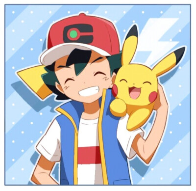
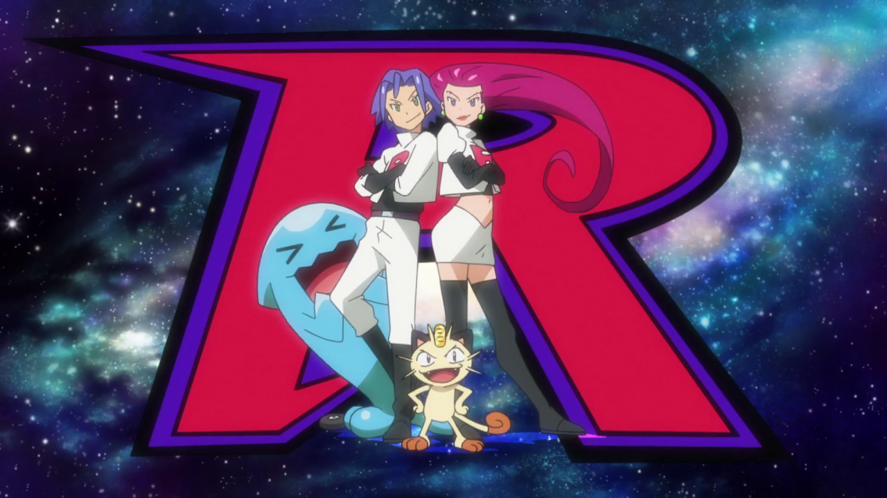

Conclusion Page
Achievements
In this project, our group explored many hot topics about Pokémon IP with EDA, NLP, machine learning, and other approaches. For example, daily activity analysis of Pokémon-related subreddit, comparison of the most popular games, post sentiment analysis, text classification, research in special Pokémon-evolution popularity, subreddit influencer, etc. After a comprehensive and complete analysis, we achieved 90% of our initial goal and did some extended work, such as sentiment classification for specific keywords and Nintendo stock prediction. There were many interesting findings, and we also extracted much potential business intelligence behind users' opinions.
From January 2021 to August 2022, the most popular subreddit related to Pokemon is pokemongo, followed by pokemon and pokemontrades. Unique product feature of the well-known AR mobile game is the key to success. Special events like updates or releases on Pokemon games and the celebration of the birthday of Pokemon are considered successful marketing campaigns that can attract attention and stimulate discussions in online social communities.
From a detailed examination of top influential authors and their submissions among the top 3 popular Pokemon subreddits, we found out that only a few of them are worth for the Pokemon company to reach out and possess commercial value. The company can utilize these useful resources to direct discussions and promote interest within the Pokemon-related Reddit online communities. The top 3 popular Pokemon among normal Pokemon are Charizard, Pikachu, and Eevee. Charizard amazed the fans with its appearance and incredible performance in the anime series. Pikachu and Eevee are both chosen to make popular by the company. The long-term investment paid off. Among legendary Pokemons, the Weather Trio receives the greatest attention. Suggesting that fans and players would remember significant events in the Pokemon world even if they happened a long time ago. Also, note that appearance plays an important part in people’s preference towards certain Pokemon. That can be considered when the Pokemon company intends to promote another iconic face to the Pokemon world. That also explains why the top 3 most discussed Eevee evolutions are the Umbreon, Sylveon, and Espeon.
The majority of people’s attitudes toward Pokemon and its related subjects on Reddit are positive. However, the percentage of positive sentiments overall is just over 60% and some of the subreddits have significantly higher proportions of negative sentiments. Indicating that the discussion on Reddit is somewhat calmer than we would imagine. Generally, fans are expressing their unique and objective opinions in subreddits related to Pokemon. Those comments shared by Reddit fans are of great value to the Pokemon company and should be analyzed carefully and accordingly when promoting updates on current games or releases of new games. Positive and negative attitudes also vary along with special events. Thus, the Pokemon company should be cautious when designing and launching annual events and certain critical activities.
To further investigate how certain Pokemon influence people’s attitudes, we applied machine learning models on subreddit names, scores, and whether the comment mentioned certain Pokemon or not to predict the sentiment of the comment. The model accuracies are not high enough. Unfortunately, we cannot say that we are confident enough to predict people’s attitudes just with the above information at the current state due to multiple potential reasons. We will focus on improving and optimizing the prediction process in the next steps. To help users quickly identify their interested content and improve user experience, we also conduct machine learning research on classifying submission titles according to the corresponding subreddits. We received more satisfying and promising results on this task. It is possible to predict the subreddits with the submission contents currently, although more optimization steps and fine-tuning will be needed in the near future to improve the prediction models. We also examined the trends of Nintendo stock price combined with the trends and sentiments of Reddit fan comments. There might exist positive correlations between them and further research needs to be done.
Future Steps
|
There are several tasks waiting to be done for the next steps. First, both the data preprocessing steps and models for the sentiment classification part need to be improved. We should filter out only the comments that mentioned the chosen Pokemons compared to all the comments. The content detail and accuracy of the sentiment labels need to be examined with caution. Since the above key information may not be accurate in the first stage and that can cause huge bias in the further prediction steps. We can also construct more fine-tuned and more complex models such as deep learning models for prediction. Second, the prediction process for the text classification part also needs to be improved and optimized. We need to distinguish contents in the subreddit Pokemon Sword and Shield. And we can add more subreddits to the filtered dataset. Also, fine-tuning can be applied to the current models. More complicated models can be considered, such as LSTM, CNN, Bert, HAN, and GPT-3. Third, we can try to model the relationship between trends and sentiments of the Reddit comments and the Nintendo stock prices with machine learning models for time series forecasting. Last, we need a deep dive into the Reddit submissions and comments content to identify some famous quotes from the Pokemon anime series. Also, we can research how those quotes influence people’s overall attitudes. |

Ash (Main character in TV series) and Pikachu
|
|

The villain Team Rocket (Kojirō and Musashi) and their classic mottos (source: bulbapedia)
|
Musashi: If you ask us this or that... Kojirō: The pity of the world is what responds! Musashi: To prevent the destruction of the world! Kojirō: To protect the peace of the world! Musashi: To stand by the evils of love and truth! Kojirō: The lovely, charmy villains! Musashi: The pair from Team Rocket soars through the galaxy! |